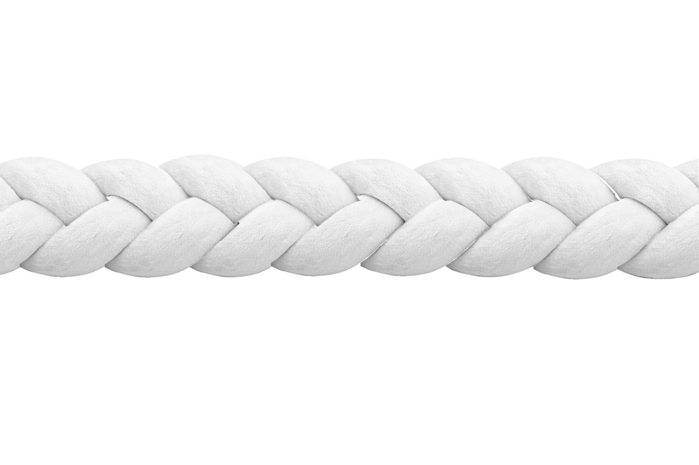

Composez votre tresse pour voir le résultat en direct ✨

1. Épaisseur de la tresse :
2. Longueur de la tresse :
3. Choix du tissu et de la couleur :
Les visuels fournis par Laura restent utilisés pour les choix. L’aperçu applique les structures transparentes dédiées afin de conserver la forme et le relief de la tresse. Les motifs Fantaisie utilisent leur image correspondante.